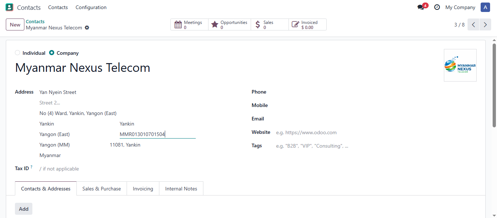
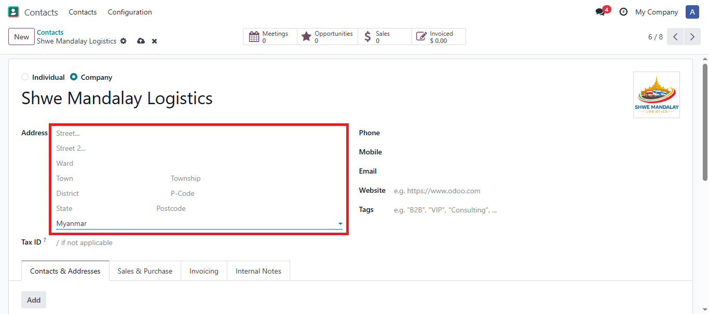
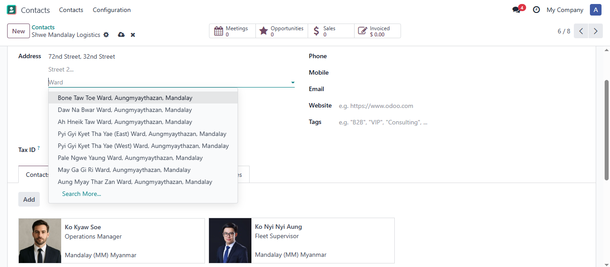
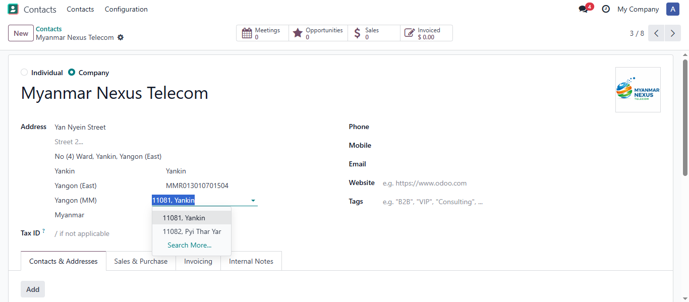
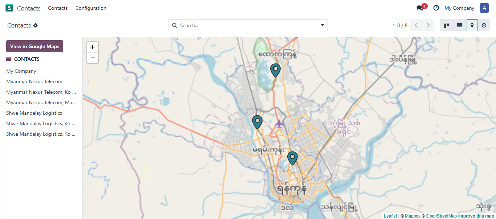
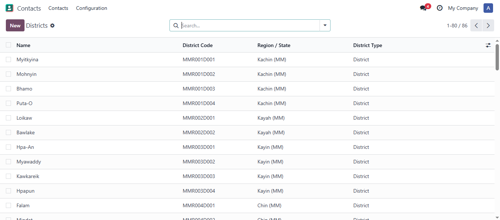
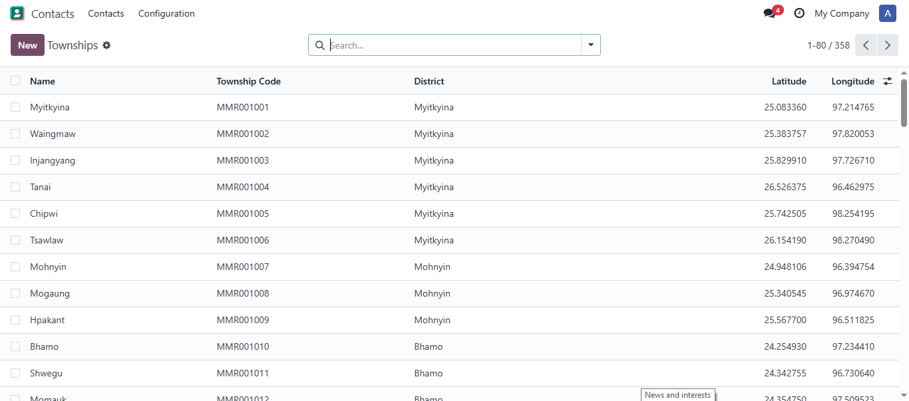
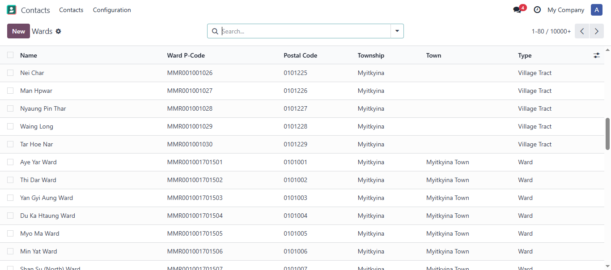

Full administrative hierarchy with State/Region → District → Township → Town → Ward/Village Tract using official MIMU P-codes, plus 900+ postal codes and township-level map coordinates.

Enter a MIMU P-code (e.g., MMR017024040) and watch all address fields populate automatically.

Myanmar-specific fields appear automatically when Myanmar is selected as country.

Search wards by name, P-code, township, or district with hierarchical display.

Postal codes automatically filtered by selected township — 900+ codes in 5-digit format.

Township-level centroid coordinates integrated with Odoo's map view.
Myanmar addresses display correctly in kanban and list views.

Districts

Townships

Wards / Village Tracts
Configuration Menu
State/Region (res.country.state)
└── District (res.district)
└── Township (res.township)
├── Town (res.town)
│ └── Ward/Village Tract (res.ward)
└── Ward/Village Tract (res.ward)
| Level | Example | Description |
|---|---|---|
| Country | MMR | Myanmar ISO-3 |
| State | MMR017 | Ayeyarwady Region |
| District | MMR017D006 | Pyapon District |
| Township | MMR017024 | Bogale Township |
| Ward | MMR017024040 | Specific ward/village tract |
No additional configuration required. Myanmar address fields appear automatically.